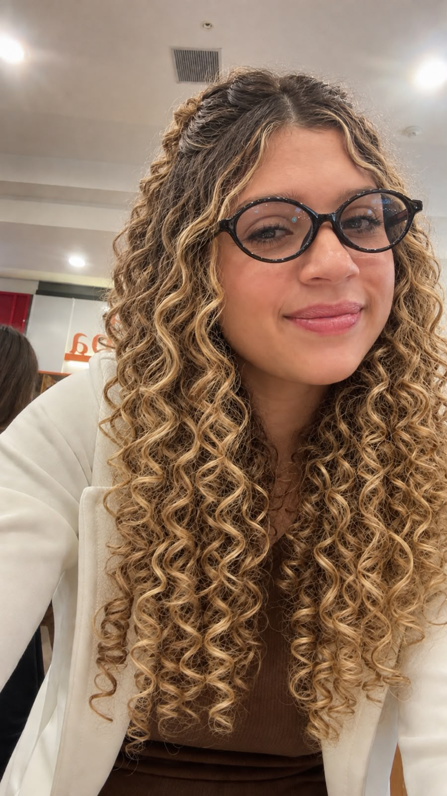

Ellen Martins
20 anos
Natural de São Paulo, morando em Araquari
Um pouco sobre mim
Minha trajetória começou em São Paulo e, aos 10 anos, me mudei para Santa Catarina. Desde então, passei por diferentes experiências que contribuíram para a minha formação pessoal e acadêmica.
- Fiz o ensino médio no IFSC de Itajaí.
- Atualmente curso Bacharelado em Sistemas de Informação no IFC - Campus Araquari.
- Tenho interesse pela área de Tecnologia da Informação, principalmente programação e redes.
- Trabalho na área de Redes em uma empresa multinacional.
Minha trajetória na tecnologia
O interesse pela área de tecnologia foi crescendo ao longo dos meus estudos. Atualmente, a faculdade e o trabalho permitem que eu tenha contato com diferentes áreas da TI e coloque em prática conhecimentos aprendidos durante minha formação.
Entre os assuntos que mais fazem parte da minha rotina estão redes de computadores, programação, desenvolvimento web e infraestrutura de tecnologia.